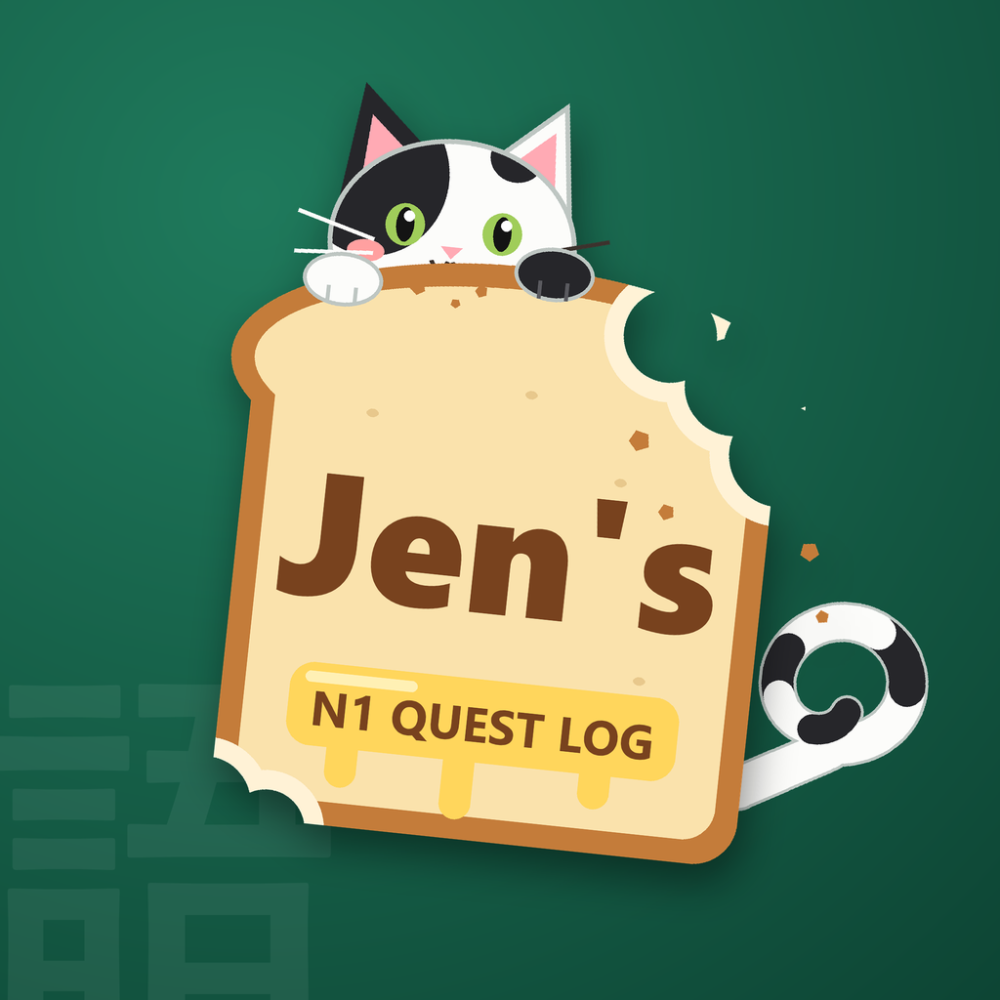

Jen's N1 Quest Log PosterJen's N1 Quest Log Poster ("công cụ") là phần mềm cá nhân, không phát hành công khai, chỉ chủ kênh Jen's N1 Quest Log sử dụng để đăng nội dung lên tài khoản TikTok của chính mình.
Chủ kênh chịu trách nhiệm về mọi nội dung đăng qua công cụ và cam kết nội dung tuân thủ Điều khoản dịch vụ và Nguyên tắc cộng đồng của TikTok. Nội dung là bài học do chủ kênh tự soạn; câu ví dụ tự viết, không sao chép sách có bản quyền.
Công cụ dùng TikTok Login Kit và Content Posting API theo đúng quyền người dùng cấp. Mỗi bài, người dùng tự chọn chế độ hiển thị, quyền bình luận/duet/stitch và khai báo nội dung thương mại trước khi bài được lên lịch.
Công cụ được cung cấp "nguyên trạng". Chúng tôi không chịu trách nhiệm nếu bài đăng chậm hoặc không đăng được do mạng, máy tính hoặc thay đổi từ TikTok.
Nhắn tin cho fanpage Jen's N1 Quest Log.
Jen's N1 Quest Log Poster (the "tool") is private software, not publicly distributed, used only by the owner of the Jen's N1 Quest Log channel to publish content to their own TikTok account.
The owner is responsible for all content published through the tool and ensures it complies with the TikTok Terms of Service and Community Guidelines. Content consists of study materials written by the owner; example sentences are original and not copied from copyrighted books.
The tool uses TikTok Login Kit and the Content Posting API strictly within the permissions the user grants. For every post, the user chooses the privacy level, comment/duet/stitch settings and commercial content disclosure before the post is scheduled.
The tool is provided "as is". We are not liable for posts that are delayed or fail because of network, computer or TikTok platform changes.
Send a message to the Jen's N1 Quest Log page.